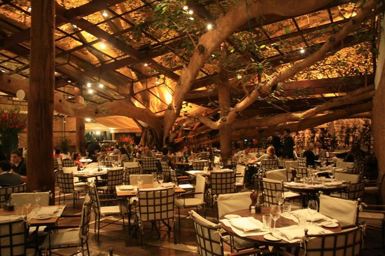
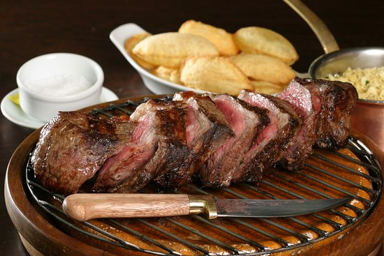
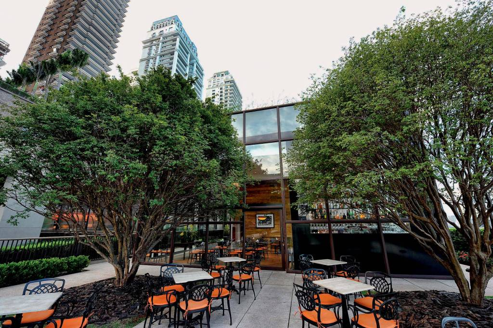
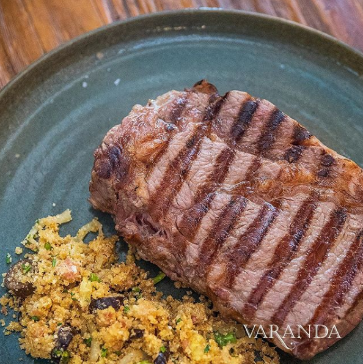
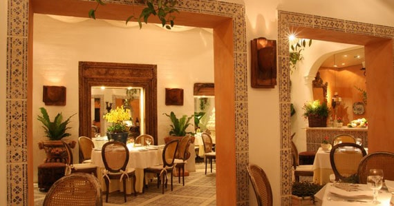
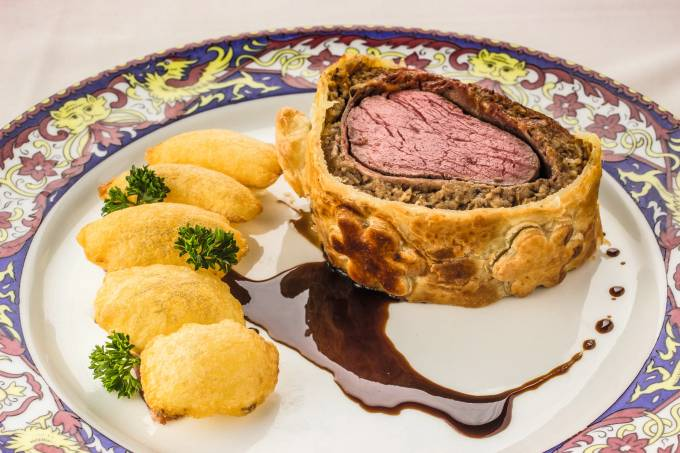
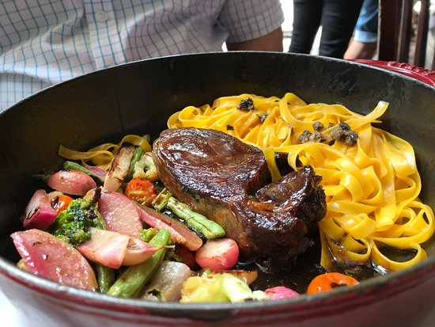
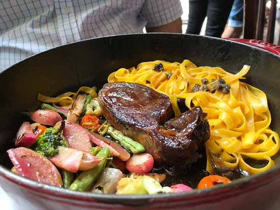

Brazilian Restaurants:
Figueira Rubayiat
 *personal favorite* Once you walk into the restaurant you are confronted by this hundred-years-old Bengal fig tree (Figueira), where all the tables are seated underneath its massive branches. The MICHELIN star restaurant is known for its fabulous meats, but also serves fantastic fish and seafood.
Plate recommendations:
Bife de chorizo (with batatas souflé and farofa), Caixote de Camarão com Riso Pastine
Varanda Jardins
 This restaurant is known for its fabulous meat cuts - the owner was once president of the Brazilian Cattle Breeders' Association. Also, a MICHELIN star restaurant, Varanda also have a beautiful environment, with wood and glass combinations that really create a pleasant ambiance.
Plate recommendations:
Costelinhas de porco, bife de chorizo (classic at all steak restaurants).
La Tambouille
 With its location so central yet so hidden, La Tambouille is a unknown icon within the local gastronomy. However, they only offer their extraordinary feijoada on Saturdays. Cooking for three days, the meats, beans, and spices are all added together to reach their perfect taste.
Plate recommendations:
Feijoada (only served on SATURDAYS - takes several days to cook)
Bar da Dona Onça
 

The iconic chef, Janaína Rueda, has created a menu that integrates stories and ingredients from all over the country yet maintaining the 'traditional'.The restaurant itself is located close to the heart of São Paulo, finding itself in a historically significant neighborhood. And, of course, it is also a MICHELIN restaurant.
Plate recommendations:
Seafood rice, picadinho de carne, estroganofe da Onça